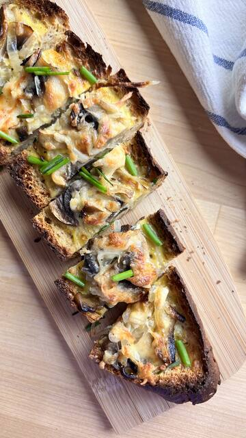
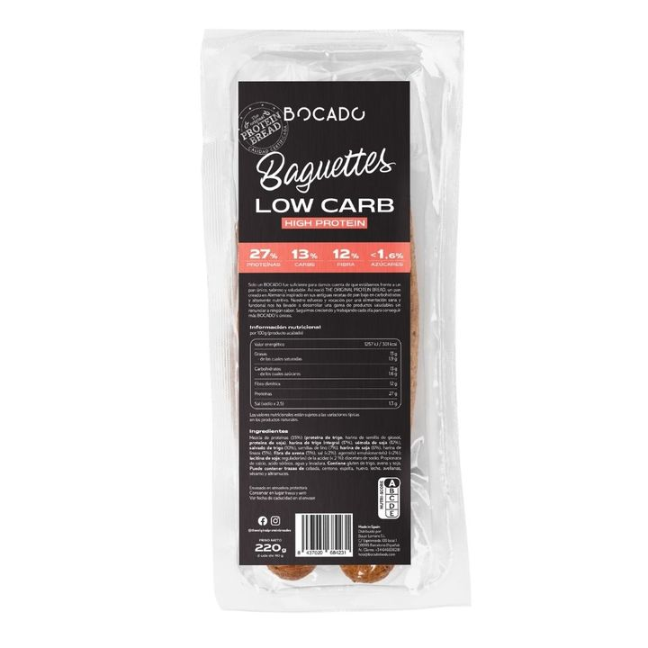

Recipe · Breakfast · 25 min approx.
World Cup Stuffed Baguette
World Cup Stuffed Baguette: a very simple idea with Low Carb Baguettes for breakfast or brunch, in about 25 minutes. It includes low Carb Baguette, mushrooms and onion. Low Carb Baguettes provides 27 g of protein per 100 g.
5 ingredients3 steps25 min approx.

Made withLow Carb Baguettes220 g · 2 × 110 gView productIngredients
- Low Carb Baguette
- Mushrooms
- Onion
- Egg
- Grated cheese
Nutrition information1 baguette (110 g): 14 g carbohydrate, 30 g protein, 13 g fibre
Method
- 01Hollow out the baguette
- 02Fill with sautéed mushrooms and onion, beaten egg and grated cheese
- 03Bake